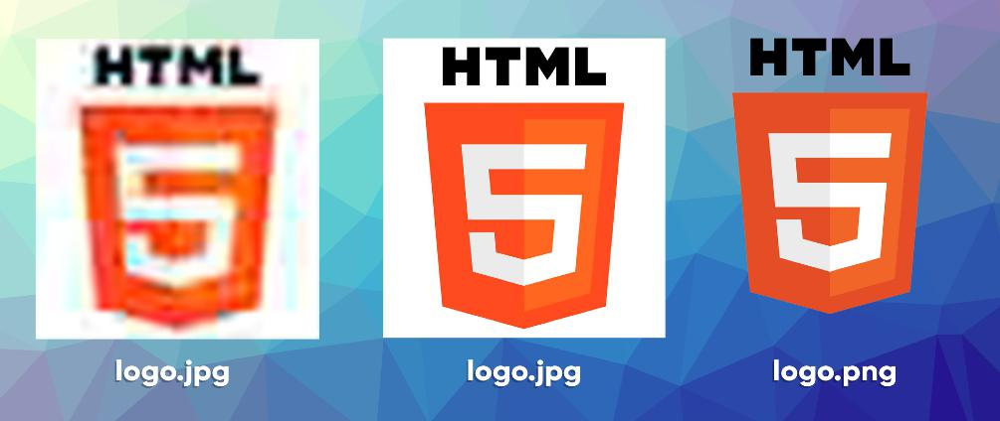

Existem vários formatos de imagem, cada um com suas características, vantagens e desvantagens. Porém, vamos
nos focar
aqui nos dois formatos compactados
mais usados para a criação de sites: JPEG e PNG.
O algoritmo de compactação JPEG é usado para gerar imagens fotográficas com um
tamanho extremamente reduzido. Ele foi criado em 1983 por Eric Hamilton e hoje é
gerenciado pelo Joint Photographics Experts Group. Ele é amplamente utilizado
por câmeras digitais modernas e programas de tratamento de imagens.
A grande vantagem do uso de arquivos JPG (em formato JPEG) é gerar arquivos
muito pequenos e que ocupam pouco espaço em disco. Isso é muito importante, pois
quando colocarmos nosso site no ar, ele tem que ser leve e carregar as imagens muito
rapidamente. Só toma cuidado para não exagerar na hora de configurar o nível de
compactação. Isso pode fazer com que sua imagem fique horrível e toda borrada (dá
só uma olhada na imagem abaixo).
O formato Portable Network Graphics (PNG) surgiu em 1996, desenvolvido pelo
W3C (o mesmo órgão que gerencia a linguagem HTML) com o objetivo de substituir o
formato GIF (que hoje voltou a ser popular graças ao WhatsApp e Instagram). Ele
também é um formato compactado, mas não tanto quanto o JPEG.
A principal característica do PNG - e que o diferencia do JPEG - é a capacidade de
configurar a opacidade de cada pixel (deixá-lo transparente ou com transparência
limitada).
Mas para entendermos melhor a explicação acima, vamos a um exemplo visual (já
que estamos falando de imagens né?)
As duas primeiras imagens estão compactadas no formato JPEG, mas na primeira eu
coloquei o nível de compactação em qualidade 5% e ficou com 20KB e na segunda
uma qualidade de 30% e ficou com 120KB. A última imagem está comprimida no
formato PNG, ficou com 300KB e teve o contorno preservado por causa do fundo
transparente.
De forma resumida, na hora de escolher o formato de imagem para o seu site, opte
sempre pelo formato JPEG com uma compactação entre 30% e 50%. O formato PNG
só deverá ser usado quando precisarmos de transparência na foto. Combinado?
Faltou falar sobre tamanho das
imagens
Quando você está começando a desenvolver
sites, acaba pensando que para obter o melhor
resultado, sua imagem deve ter um tamanho
GIGANTE para poder ter a maior qualidade.
Realmente, uma imagem com resolução grande
(1920x1080) tem mais pontos que uma imagem
com resolução pequena (500x280). Só que uma
imagem 1920x1080 pode gerar um arquivo de
até 3MB, enquanto uma 500x280 dificilmente vai
passar de 500KB.

A regra de outro nesses casos é: use imagens do tamanho certo! Vai precisar de
uma imagem que vai ter 200 pixels de largura?
Gere um arquivo exatamente com esse tamanho! Nada de ficar salvando arquivos gigantes e diminuindo o tamanho
da
imagem com códigos.
Uma imagem 1920x1080 de 3MB não vai ficar mais leve
se você mudar a largura dela
no seu CSS. Muito pelo contrário. Seu navegador vai
levar um tempão pra carregar o
arquivo do seu servidor e vai exibir a imagem
minúscula na tela.
E no que isso te prejudica? Os mecanismos de busca
como o Google PENALIZAM
sites lentos e pesados, retirando-os da primeira
página de buscas. Quem aqui quer
criar um site que não aparece nos resultados do
Google?
Existem vários sites que oferecem imagens
de domínio público para serem usados em
seus projetos. Mas a dica que te dei antes
continua valendo: leia atentamente as
instruções para uso dessas imagens.
Algumas delas deixam você usar a arte
apenas se o artista for creditado em um
texto localizado no seu site.
Alguns dos sites que eu mais gosto de
visitar quando quero usar imagens com
domínio público são:
Vamos falar sobre formatos de
Imagem
Existem vários formatos de imagem, cada um com suas características, vantagens e
desvantagens. Porém, vamos nos focar aqui nos dois formatos compactados mais
usados para a criação de sites: JPEG e PNG.
O algoritmo de compactação JPEG é usado para gerar imagens
fotográficas com um
tamanho extremamente reduzido. Ele foi criado em 1983 por Eric
Hamilton e hoje é
gerenciado pelo Joint Photographics Experts Group. Ele é
amplamente utilizado
por câmeras digitais modernas e programas de tratamento de
imagens.
A grande vantagem do uso de arquivos JPG (em formato JPEG) é
gerar arquivos
muito pequenos e que ocupam pouco espaço em disco. Isso é muito
importante, pois
quando colocarmos nosso site no ar, ele tem que ser leve e
carregar as imagens muito
rapidamente. Só toma cuidado para não exagerar na hora de
configurar o nível de
compactação. Isso pode fazer com que sua imagem fique horrível e
toda borrada (dá
só uma olhada na imagem abaixo).
O formato Portable Network Graphics (PNG) surgiu em 1996,
desenvolvido pelo
W3C (o mesmo órgão que gerencia a linguagem HTML) com o objetivo
de substituir o
formato GIF (que hoje voltou a ser popular graças ao WhatsApp e
Instagram). Ele
também é um formato compactado, mas não tanto quanto o JPEG.
A principal característica do PNG - e que o diferencia do JPEG - é a capacidade de configurar a opacidade de cada pixel
(deixá-lo transparente ou com transparência limitada).
Mas para entendermos melhor a explicação acima, vamos a um exemplo visual (já que estamos falando de
imagens né?)

Testando os conhecimentos adquiridos
Ok, agora que terminamos de ler esse capítulo e já acompanhamos ao vídeo desta aula e buscamos mais
informações conforme as referências externas
que indicamos,
pois agora, vamos responder a essas 10 perguntas objetivas e marque em cada uma
delas a única opção verdadeira.
Aí sim, vamos poder comprovar que realmente entendemos o conteúdo.
- Quando você está criando um site ou
qualquer outro tipo de conteúdo, deve se
preocupar bastante com os direitos de
uso de determinada mídia (imagem,
som, vídeo, etc). Qual dos itens a seguir
melhor define esse assunto?
- Se a mídia estiver em um site público
como Google e YouTube, podemos usar
sem problemas.
- Não podemos usar nenhuma mídia
sem a prévia autorização do seu criador
- Enquanto estamos estudando e
aprendendo, temos total permissão para
usar mídias de terceiros.
- Podemos usar qualquer mídia e pagar
uma multa quando formos descobertos.
- Qual dos itens a seguir é incorreto
quando o assunto é não passar por
problemas relacionados a direitos
autorais?
- seja o criador das suas próprias artes
- consiga uma autorização legal do
detentor dos direitos autorais
- compre os direitos de uso em sites
especializados e use quantas vezes
quiser
- use imagens com licenças públicas,
como Creative Commons
- Qual dos sites a seguir é especializado
em disponibilizar apenas imagens para
uso liberado, sem direitos autorais?
- Google Imagens
- Getty Imagens
- Shutterstock
- Pexels
- Qual foi o formato de imagens criado
na década de 80 com o objetivo de
reduzir o tamanho dos arquivos das
imagens, sem reduzir sua dimensão?
- JPEG
- PNG
- GIF
- ZIP
- Qual é o único dos formatos a seguir
que possui suporte para imagens com
partes transparentes e compactadas?
- JPEG
- BMP
- TIFF
- PNG
- O que significa a sigla JPEG?
- Joint Photographics Expert Group
- JPG Photo Enhancement Graphic
- Join Picture Enlarge Group
- JPG Photographics Enhancement Group
- Muita gente fica na dúvida sobre o
tamanho da imagem
- use sempre a melhor qualidade
possível para que seu site fique bonito
- use sempre a pior qualidade possível,
pois os sites precisam ser rápidos
- tente balancear sempre qualidade e tamanho, para que
seu site não fique pesado mas não se esqueça da experiência
proporcionada ao seu visitante.
- deixe o visitante escolher se quer
imagens grandes ou sites rápidos
- Qual é a tag usada na HTML para
inserir imagens como parte do conteúdo
do site?
- <image>
- <photo>
- <picture>
- <img>
- Dentro da tag para inserir a imagem,
usamos um parâmetro especial para
indicar a localização da imagem a ser
carregada. Que parâmetro é esse?
- src
- source
- photo
- jpeg
- Para configurar uma imagem como ícone de favoritos de uma página
(favicon), usamos a tag <link> dentro da área <head> do seu
site. Qual dos itens a seguir, é o único que preenche corretamente as lacunas da frase
anterior?
- <img> / <body>
- <favicon> / <head>
- <link> / <head>
- <meta> / <body>